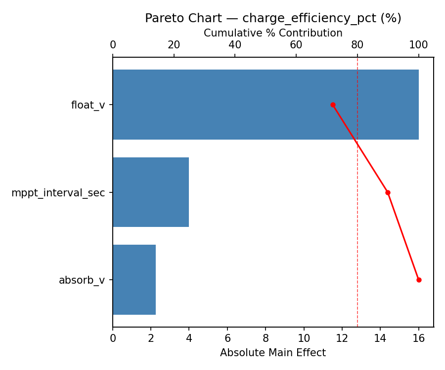
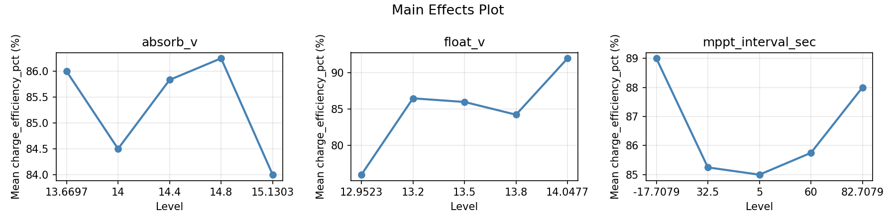
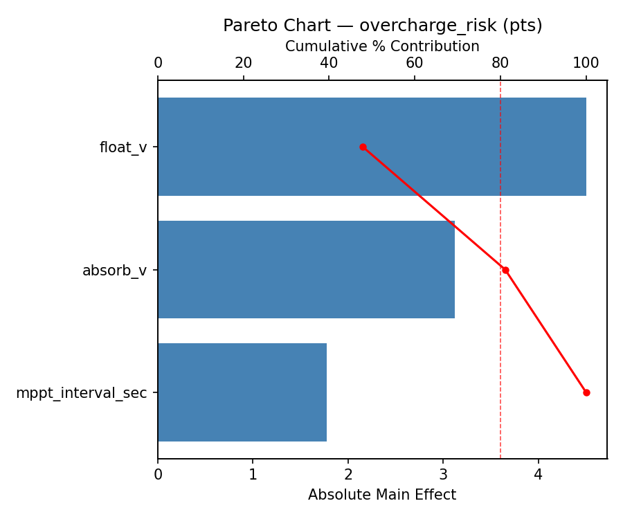
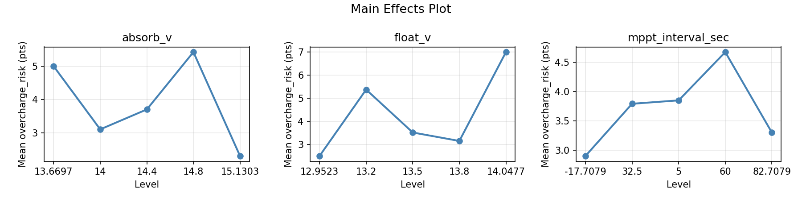
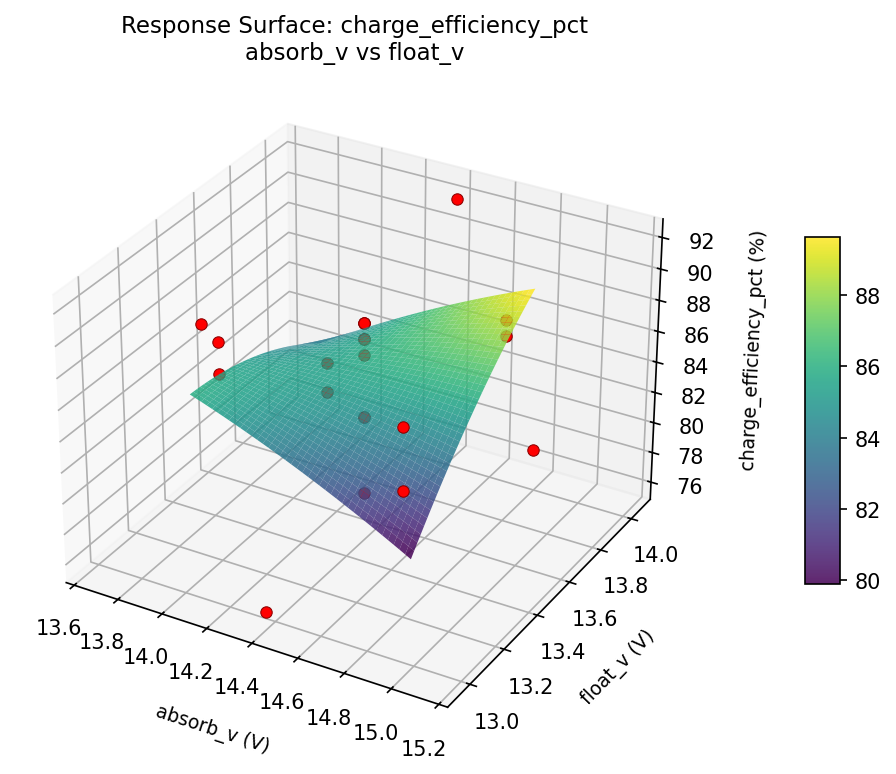
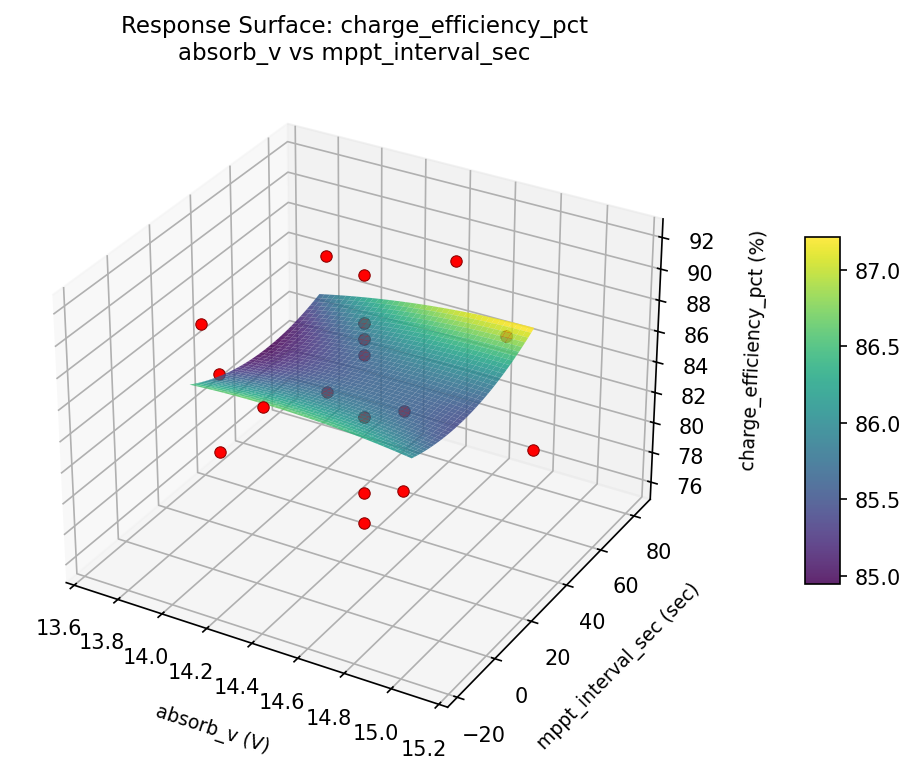
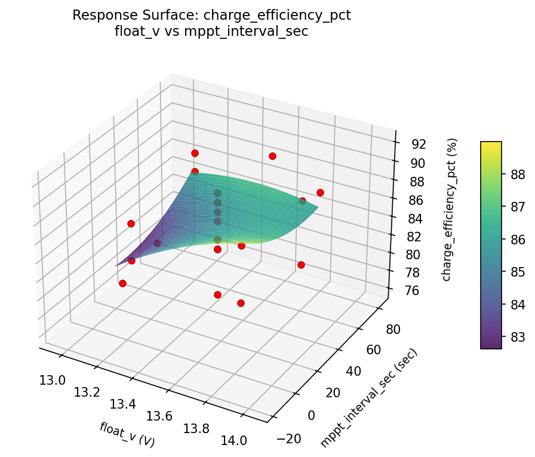
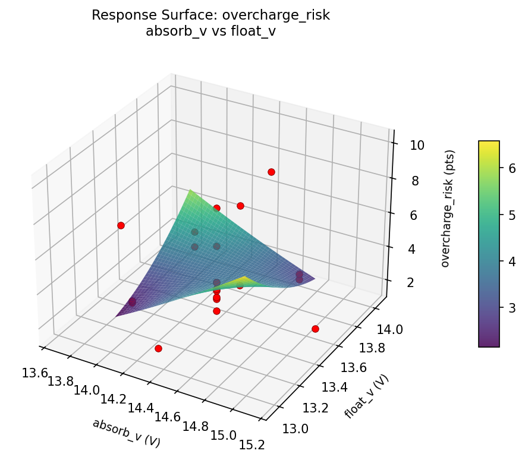
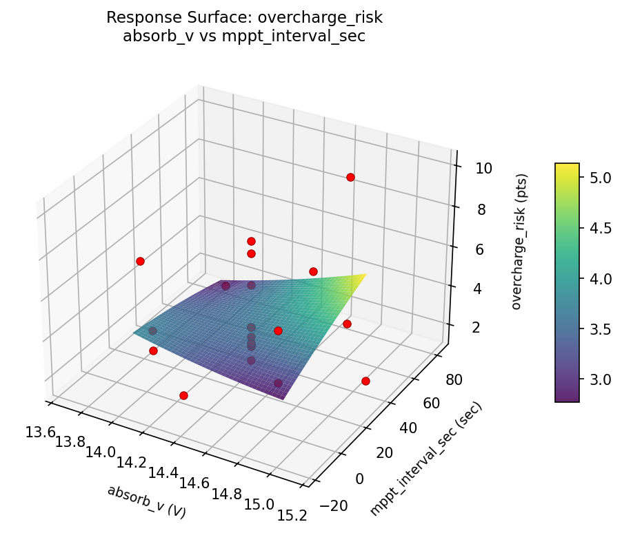
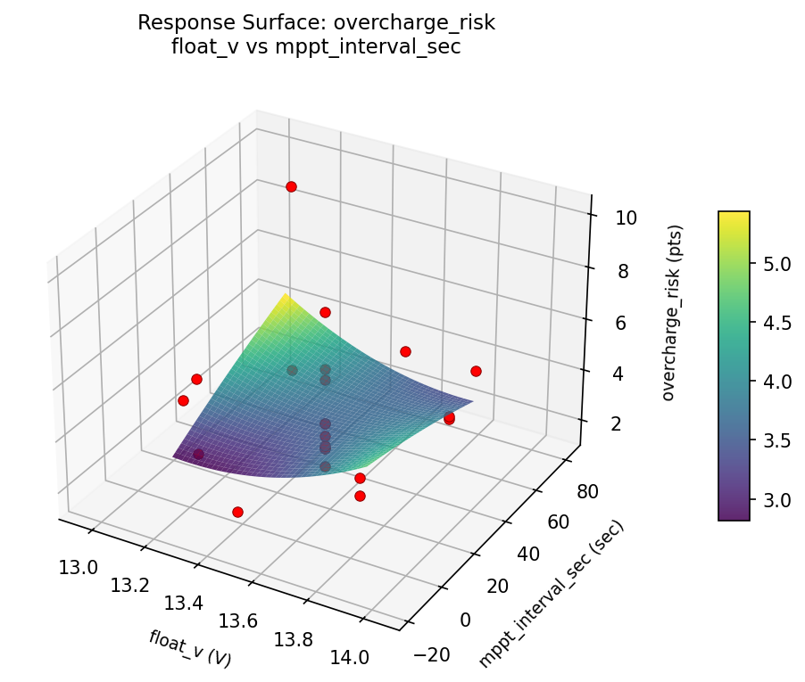

Summary
This experiment investigates solar charge controller setup. Central composite design to maximize battery charge efficiency and minimize overcharge risk by tuning absorption voltage, float voltage, and MPPT sweep interval.
The design varies 3 factors: absorb v (V), ranging from 14.0 to 14.8, float v (V), ranging from 13.2 to 13.8, and mppt interval sec (sec), ranging from 5 to 60. The goal is to optimize 2 responses: charge efficiency pct (%) (maximize) and overcharge risk (pts) (minimize). Fixed conditions held constant across all runs include panel wp = 300, battery = 12V_100Ah.
A Central Composite Design (CCD) was selected to fit a full quadratic response surface model, including curvature and interaction effects. With 3 factors this produces 22 runs including center points and axial (star) points that extend beyond the factorial range.
Quadratic response surface models were fitted to capture potential curvature and factor interactions. The RSM contour plots below visualize how pairs of factors jointly affect each response.
Key Findings
For charge efficiency pct, the most influential factors were float v (71.9%), mppt interval sec (18.0%), absorb v (10.1%). The best observed value was 92.0 (at absorb v = 14, float v = 13.8, mppt interval sec = 60).
For overcharge risk, the most influential factors were float v (47.9%), absorb v (33.2%), mppt interval sec (18.9%). The best observed value was 1.6 (at absorb v = 14.4, float v = 13.5, mppt interval sec = 32.5).
Recommended Next Steps
- Run confirmation experiments at the predicted optimal settings to validate the model.
- Consider whether any fixed factors should be varied in a future study.
Experimental Setup
Factors
| Factor | Low | High | Unit |
|---|
absorb_v | 14.0 | 14.8 | V |
float_v | 13.2 | 13.8 | V |
mppt_interval_sec | 5 | 60 | sec |
Fixed: panel_wp = 300, battery = 12V_100Ah
Responses
| Response | Direction | Unit |
|---|
charge_efficiency_pct | ↑ maximize | % |
overcharge_risk | ↓ minimize | pts |
Configuration
{
"metadata": {
"name": "Solar Charge Controller Setup",
"description": "Central composite design to maximize battery charge efficiency and minimize overcharge risk by tuning absorption voltage, float voltage, and MPPT sweep interval"
},
"factors": [
{
"name": "absorb_v",
"levels": [
"14.0",
"14.8"
],
"type": "continuous",
"unit": "V"
},
{
"name": "float_v",
"levels": [
"13.2",
"13.8"
],
"type": "continuous",
"unit": "V"
},
{
"name": "mppt_interval_sec",
"levels": [
"5",
"60"
],
"type": "continuous",
"unit": "sec"
}
],
"fixed_factors": {
"panel_wp": "300",
"battery": "12V_100Ah"
},
"responses": [
{
"name": "charge_efficiency_pct",
"optimize": "maximize",
"unit": "%"
},
{
"name": "overcharge_risk",
"optimize": "minimize",
"unit": "pts"
}
],
"settings": {
"operation": "central_composite",
"test_script": "use_cases/276_solar_charge_controller/sim.sh"
}
}
Experimental Matrix
The Central Composite Design produces 22 runs. Each row is one experiment with specific factor settings.
| Run | absorb_v | float_v | mppt_interval_sec |
|---|
| 1 | 14.4 | 13.5 | 32.5 |
| 2 | 14.8 | 13.2 | 60 |
| 3 | 14 | 13.8 | 5 |
| 4 | 14.4 | 14.0477 | 32.5 |
| 5 | 14.4 | 13.5 | 32.5 |
| 6 | 13.6697 | 13.5 | 32.5 |
| 7 | 14.4 | 13.5 | -17.7079 |
| 8 | 14.4 | 13.5 | 32.5 |
| 9 | 14.8 | 13.8 | 5 |
| 10 | 15.1303 | 13.5 | 32.5 |
| 11 | 14.4 | 13.5 | 32.5 |
| 12 | 14.4 | 12.9523 | 32.5 |
| 13 | 14.4 | 13.5 | 32.5 |
| 14 | 14 | 13.2 | 60 |
| 15 | 14.4 | 13.5 | 32.5 |
| 16 | 14.8 | 13.2 | 5 |
| 17 | 14.4 | 13.5 | 82.7079 |
| 18 | 14.8 | 13.8 | 60 |
| 19 | 14.4 | 13.5 | 32.5 |
| 20 | 14 | 13.2 | 5 |
| 21 | 14 | 13.8 | 60 |
| 22 | 14.4 | 13.5 | 32.5 |
Step-by-Step Workflow
1
Preview the design
$ python doe.py info --config use_cases/276_solar_charge_controller/config.json
2
Generate the runner script
$ python doe.py generate --config use_cases/276_solar_charge_controller/config.json \
--output use_cases/276_solar_charge_controller/results/run.sh --seed 42
3
Execute the experiments
$ bash use_cases/276_solar_charge_controller/results/run.sh
4
Analyze results
$ python doe.py analyze --config use_cases/276_solar_charge_controller/config.json
5
Get optimization recommendations
$ python doe.py optimize --config use_cases/276_solar_charge_controller/config.json
ℹ
Multi-Objective Optimization
This experiment has conflicting objectives (charge_efficiency_pct (↑), overcharge_risk (↓)). Use --multi to find the best compromise using desirability functions:
$ python doe.py optimize --config use_cases/276_solar_charge_controller/config.json --multi
6
Generate the HTML report
$ python doe.py report --config use_cases/276_solar_charge_controller/config.json \
--output use_cases/276_solar_charge_controller/results/report.html
Real-World Experiment Workflow
ℹ
Physical Electronics Test? Use the Manual Workflow
Electronics experiments involve real circuits, components, and electromagnetic phenomena that must be measured with instruments. The simulation script above is for demonstration. For your real experiments, use record, status, and export-worksheet.
$ python doe.py export-worksheet --config use_cases/276_solar_charge_controller/config.json \
--format csv --output worksheet.csv
$ python doe.py status --config use_cases/276_solar_charge_controller/config.json
$ python doe.py record --config use_cases/276_solar_charge_controller/config.json --run 1
$ python doe.py analyze --config use_cases/276_solar_charge_controller/config.json --partial
$ python doe.py analyze --config use_cases/276_solar_charge_controller/config.json
$ python doe.py optimize --config use_cases/276_solar_charge_controller/config.json
$ python doe.py report --config use_cases/276_solar_charge_controller/config.json \
--output report.html
✔
Works Without a Test Script
The analysis pipeline doesn't care how results were produced. Record your measurements with record, and the full analysis, optimization, and reporting pipeline works identically. Use --partial to get early insights before all runs are complete.
Features Exercised
| Feature | Value |
|---|
| Design type | central_composite |
| Factor types | continuous (all 3) |
| Arg style | double-dash |
| Responses | 2 (charge_efficiency_pct ↑, overcharge_risk ↓) |
| Total runs | 22 |
Analysis Results
Generated from actual experiment runs using the DOE Helper Tool.
Response: charge_efficiency_pct
Top factors: float_v (71.9%), mppt_interval_sec (18.0%), absorb_v (10.1%).
Pareto Chart

Main Effects Plot

Response: overcharge_risk
Top factors: float_v (47.9%), absorb_v (33.2%), mppt_interval_sec (18.9%).
Pareto Chart

Main Effects Plot

Response Surface Plots
3D surfaces fitted with quadratic RSM. Red dots are observed data points.
charge efficiency pct absorb v vs float v

charge efficiency pct absorb v vs mppt interval sec

charge efficiency pct float v vs mppt interval sec

overcharge risk absorb v vs float v

overcharge risk absorb v vs mppt interval sec

overcharge risk float v vs mppt interval sec

Full Analysis Output
RSM surface: rsm_charge_efficiency_pct_absorb_v_vs_float_v.png
RSM surface: rsm_charge_efficiency_pct_absorb_v_vs_mppt_interval_sec.png
RSM surface: rsm_charge_efficiency_pct_float_v_vs_mppt_interval_sec.png
RSM surface: rsm_overcharge_risk_absorb_v_vs_float_v.png
RSM surface: rsm_overcharge_risk_absorb_v_vs_mppt_interval_sec.png
RSM surface: rsm_overcharge_risk_float_v_vs_mppt_interval_sec.png
=== Main Effects: charge_efficiency_pct ===
Factor Effect Std Error % Contribution
--------------------------------------------------------------
float_v 16.0000 0.8519 71.9%
mppt_interval_sec 4.0000 0.8519 18.0%
absorb_v 2.2500 0.8519 10.1%
=== Summary Statistics: charge_efficiency_pct ===
absorb_v:
Level N Mean Std Min Max
------------------------------------------------------------
13.6697 1 86.0000 0.0000 86.0000 86.0000
14 4 84.5000 4.2032 80.0000 89.0000
14.4 12 85.8333 4.8399 76.0000 92.0000
14.8 4 86.2500 2.2174 83.0000 88.0000
15.1303 1 84.0000 0.0000 84.0000 84.0000
float_v:
Level N Mean Std Min Max
------------------------------------------------------------
12.9523 1 76.0000 0.0000 76.0000 76.0000
13.2 4 86.5000 2.5166 83.0000 89.0000
13.5 12 86.0000 3.3845 78.0000 89.0000
13.8 4 84.2500 3.8622 80.0000 88.0000
14.0477 1 92.0000 0.0000 92.0000 92.0000
mppt_interval_sec:
Level N Mean Std Min Max
------------------------------------------------------------
-17.7079 1 89.0000 0.0000 89.0000 89.0000
32.5 12 85.2500 4.6928 76.0000 92.0000
5 4 85.0000 2.9439 82.0000 88.0000
60 4 85.7500 3.9476 80.0000 89.0000
82.7079 1 88.0000 0.0000 88.0000 88.0000
=== Main Effects: overcharge_risk ===
Factor Effect Std Error % Contribution
--------------------------------------------------------------
float_v 4.5000 0.4448 47.9%
absorb_v 3.1250 0.4448 33.2%
mppt_interval_sec 1.7750 0.4448 18.9%
=== Summary Statistics: overcharge_risk ===
absorb_v:
Level N Mean Std Min Max
------------------------------------------------------------
13.6697 1 5.0000 0.0000 5.0000 5.0000
14 4 3.1000 0.4690 2.8000 3.8000
14.4 12 3.7000 1.9169 1.6000 7.6000
14.8 4 5.4250 3.3777 2.8000 10.1000
15.1303 1 2.3000 0.0000 2.3000 2.3000
float_v:
Level N Mean Std Min Max
------------------------------------------------------------
12.9523 1 2.5000 0.0000 2.5000 2.5000
13.2 4 5.3750 3.4248 2.8000 10.1000
13.5 12 3.5167 1.6878 1.6000 7.6000
13.8 4 3.1500 0.4509 2.8000 3.8000
14.0477 1 7.0000 0.0000 7.0000 7.0000
mppt_interval_sec:
Level N Mean Std Min Max
------------------------------------------------------------
-17.7079 1 2.9000 0.0000 2.9000 2.9000
32.5 12 3.7917 1.9810 1.6000 7.6000
5 4 3.8500 1.3026 2.8000 5.7000
60 4 4.6750 3.6170 2.8000 10.1000
82.7079 1 3.3000 0.0000 3.3000 3.3000
Pareto chart (charge_efficiency_pct): use_cases/276_solar_charge_controller/results/analysis/pareto_charge_efficiency_pct.png
Pareto chart (overcharge_risk): use_cases/276_solar_charge_controller/results/analysis/pareto_overcharge_risk.png
Main effects (charge_efficiency_pct): use_cases/276_solar_charge_controller/results/analysis/main_effects_charge_efficiency_pct.png
Main effects (overcharge_risk): use_cases/276_solar_charge_controller/results/analysis/main_effects_overcharge_risk.png
Optimization Recommendations
=== Optimization: charge_efficiency_pct ===
Direction: maximize
Best observed run: #9
absorb_v = 14
float_v = 13.8
mppt_interval_sec = 60
Value: 92.0
RSM Model (linear, R² = 0.0702, Adj R² = -0.0848):
Coefficients:
intercept +85.5909
absorb_v -0.4210
float_v +1.0196
mppt_interval_sec +0.6224
RSM Model (quadratic, R² = 0.3619, Adj R² = -0.1167):
Coefficients:
intercept +83.2488
absorb_v -0.4210
float_v +1.0196
mppt_interval_sec +0.6224
absorb_v*float_v +0.0000
absorb_v*mppt_interval_sec -1.0000
float_v*mppt_interval_sec +1.5000
absorb_v^2 +1.4210
float_v^2 +0.9712
mppt_interval_sec^2 +1.1210
Curvature analysis:
absorb_v coef=+1.4210 convex (has a minimum)
mppt_interval_sec coef=+1.1210 convex (has a minimum)
float_v coef=+0.9712 convex (has a minimum)
Notable interactions:
float_v*mppt_interval_sec coef=+1.5000 (synergistic)
absorb_v*mppt_interval_sec coef=-1.0000 (antagonistic)
Predicted optimum (from linear model):
absorb_v = 14
float_v = 13.8
mppt_interval_sec = 60
Predicted value: 87.6539
Model quality: Weak fit — consider adding center points or using a different design.
Factor importance:
1. float_v (effect: 6.5, contribution: 39.0%)
2. absorb_v (effect: 5.2, contribution: 31.0%)
3. mppt_interval_sec (effect: 5.0, contribution: 30.0%)
=== Optimization: overcharge_risk ===
Direction: minimize
Best observed run: #20
absorb_v = 14.4
float_v = 13.5
mppt_interval_sec = 32.5
Value: 1.6
RSM Model (linear, R² = 0.1243, Adj R² = -0.0216):
Coefficients:
intercept +3.9000
absorb_v -0.1684
float_v +0.2674
mppt_interval_sec +0.8216
RSM Model (quadratic, R² = 0.2754, Adj R² = -0.2681):
Coefficients:
intercept +3.8132
absorb_v -0.1684
float_v +0.2674
mppt_interval_sec +0.8216
absorb_v*float_v -0.5250
absorb_v*mppt_interval_sec -0.6500
float_v*mppt_interval_sec +0.6500
absorb_v^2 +0.1934
float_v^2 -0.3316
mppt_interval_sec^2 +0.2684
Curvature analysis:
float_v coef=-0.3316 concave (has a maximum)
mppt_interval_sec coef=+0.2684 convex (has a minimum)
absorb_v coef=+0.1934 convex (has a minimum)
Notable interactions:
float_v*mppt_interval_sec coef=+0.6500 (synergistic)
absorb_v*mppt_interval_sec coef=-0.6500 (antagonistic)
absorb_v*float_v coef=-0.5250 (antagonistic)
Predicted optimum (from linear model):
absorb_v = 14.4
float_v = 13.5
mppt_interval_sec = 82.7079
Predicted value: 5.4001
Model quality: Weak fit — consider adding center points or using a different design.
Factor importance:
1. mppt_interval_sec (effect: 4.8, contribution: 53.6%)
2. absorb_v (effect: 2.5, contribution: 27.6%)
3. float_v (effect: 1.7, contribution: 18.8%)